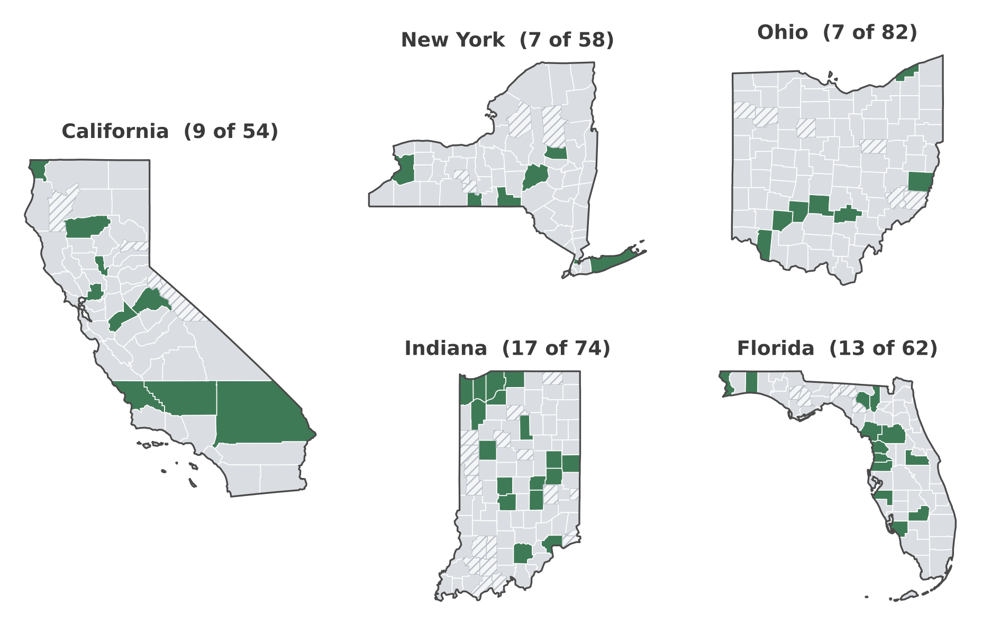

About this project
I'm a PhD candidate in criminology at Indiana University. My dissertation asks a simple question: where can people actually get harm reduction help, and where can't they?
I looked at five states (California, Florida, Indiana, New York and Ohio) and every county in them, 367 in all. I counted four kinds of services: syringe programs, naloxone, treatment and recovery housing. Finding them took 23 separate lists. If it was that hard for me as a researcher, it's likely harder for someone looking for help.
Two Indiana counties of the same size, under the same state law, are 16 and 84 miles from the nearest syringe program.
I first planned to build one index to flag underserved counties. One score would have hidden which service was missing, so I went descriptive instead, and that turned into a county page. This site shares what I've found so far. It's an early prototype, and the results are preliminary.
Where the gaps are
Green counties are what I call gap counties: more drug-related harm than most counties in their state, and less help than most. Next to each state is how many gap counties it has, out of the counties where I could score need.

More
What I've found so far: help follows people more than need, and rural counties are farthest from a syringe program.
How the scores work: what the gap means, the data I used and the limits.